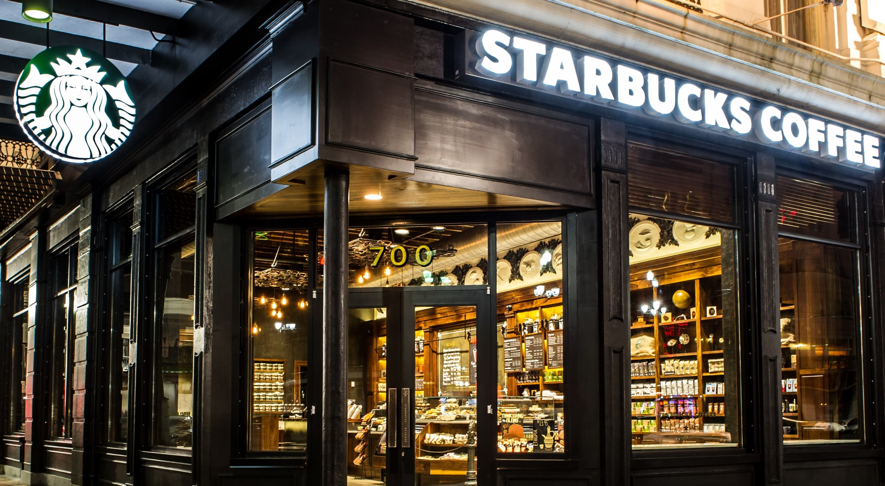
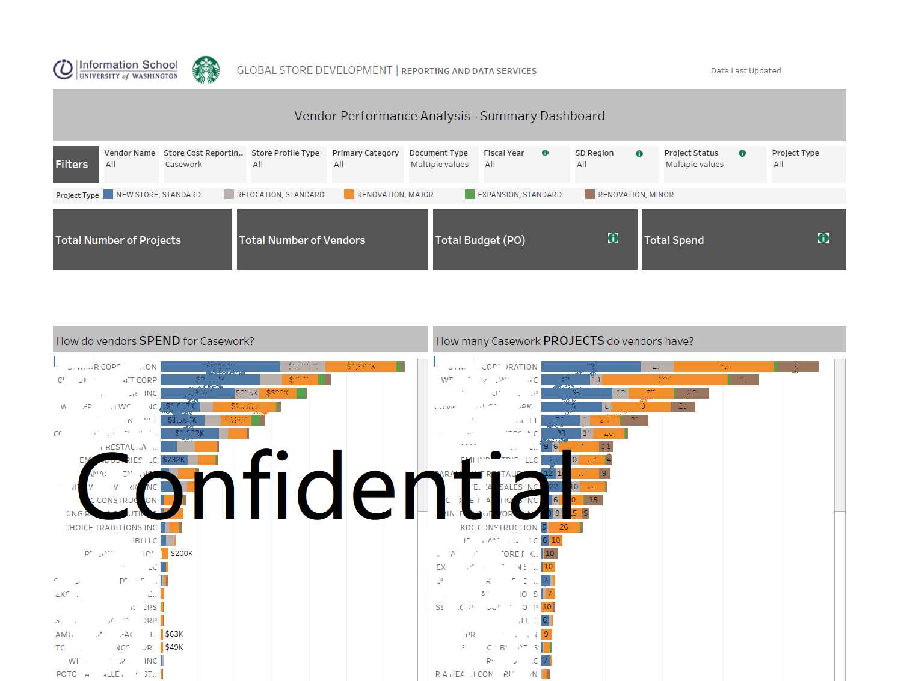
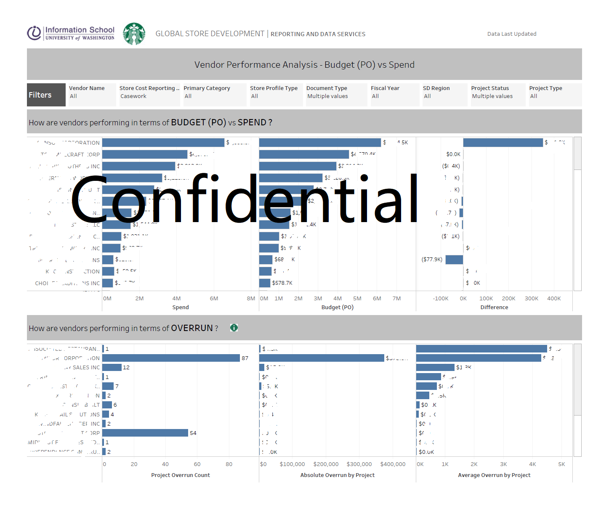
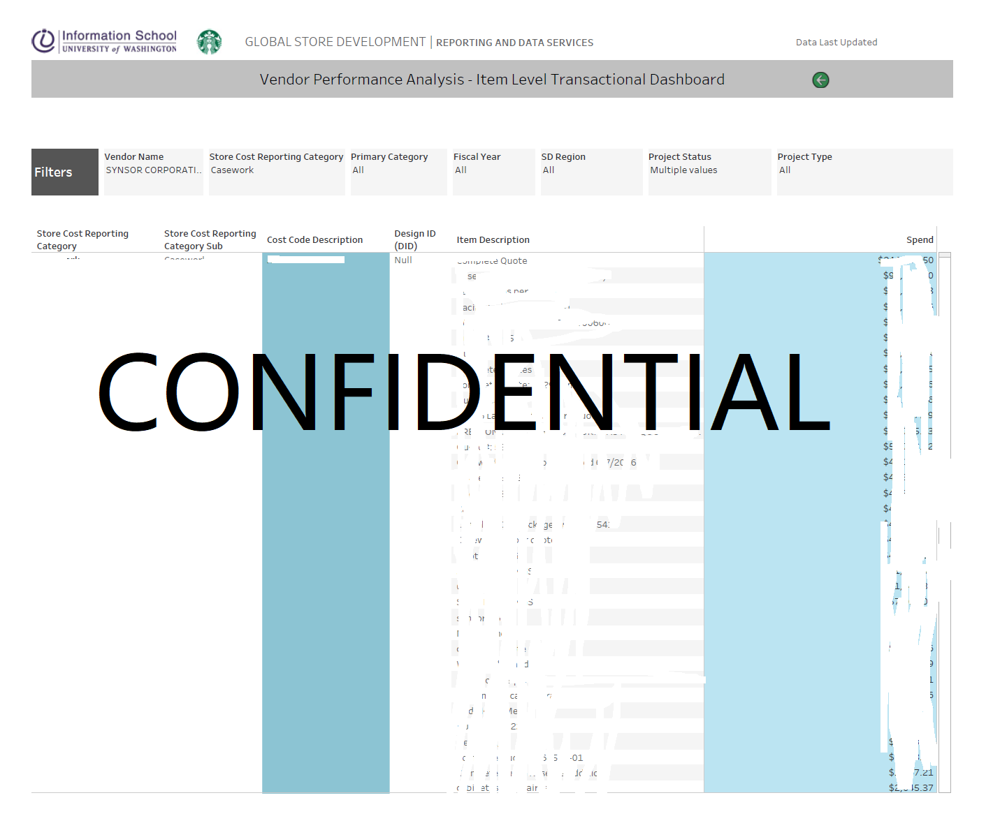

Starbucks Vendor Performance Analysis
Key Question:
How are our store vendors performing?
During the process of building and renovating stores, key decisions are made surrounding which suppliers to use for materials and services used during the design and construction process. As the leader of student project for the Store Development business team at Starbucks, we provided analytics back to the supply chain team to inform decisions around which vendors to contract with. Here is the process of our project:
Analysis and Design
-
Met with business stakeholders and identify desired outcomes, key business questions, and KPIs.
- Reviewed current data model.
- Created project scope and project plan and obtained sign off on plan from stakeholders.
Report Development
-
Used tableau to propose data visualization that address the KPIs and business questions outlined in
the analysis phase of the project.
-
Iterated with business partners to refine visualizations and obtain sign off on report.
-
Published report to tableau server.
-
Documentation and Hand-off: Completed standard documentation on report architecture and design
as well as technical documentation on
code and report visualizations.
- Prepared final presentation of reporting deliverables and hand off to business stakeholders.
Design Elements for Dashboards
- We created three levels of dashboards: summary, analytical and transactional dashboards.
- For each level of dashboard, we used same layout format: logo, title, filters, color legends and barcharts
- To easily navigate through different levels of dashboards, we created link on each bar chart's tooltip to any of other dashboards.
Summary Dashboard 
Analytical Dashboard (one example) 
Transactional Dashboard (one example) 